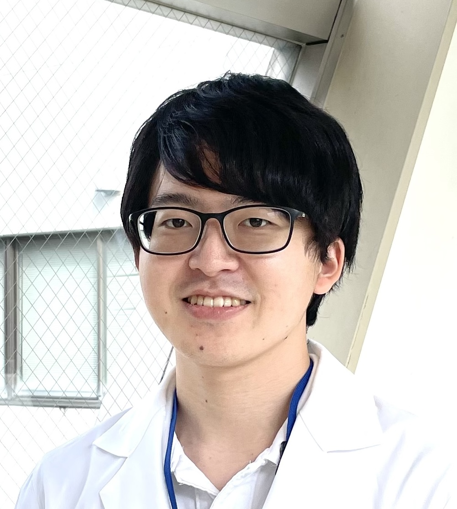
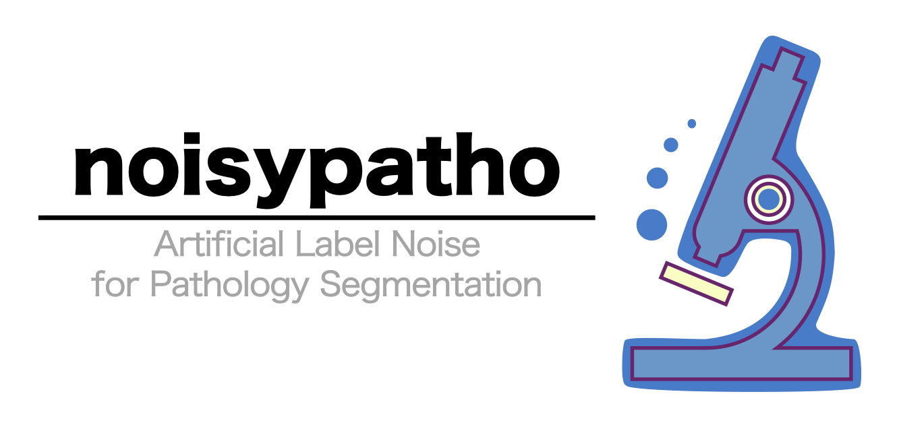

- (Preprint) Harada K (*co-correspondence), Nomura Y, Komura D, Ishikawa S, Sakashita S. Label Noise in Pathological Segmentation is Overlooked, Leading to Potential Overestimation of Artificial Intelligence Models. bioRxiv 2025.02.18.638843; doi: 10.1101/2025.02.18.638843
- Harada K, Sakamoto N, Kitaoka T, Nakamura Y, Kondo R, Morisue R, Hashimoto H, Yamamoto Y, Ukai S, Maruyama R, Sakashita S, Kojima M, Tanabe K, Ohdan H, Shitara K, Kinoshita T, Ishii G, Yasui W, Ochiai A, Ishikawa S. PI3 expression predicts recurrence after chemotherapy with DNA-damaging drugs in gastric cancer. J Pathol. 2025 Feb 20. doi: 10.1002/path.6400. Epub ahead of print. PMID: 39980125.
- Kitaoka T, Harada K, Sakashita S, Kojima M, Taki T, Kuwata T, Kinoshita T, Futakuchi M, Ishii G, Sakamoto N. Quantification of Gremlin 1 throughout the tumor stroma using whole slide imaging and its clinicopathological significance in gastric cancer. Virchows Arch. 2024 Dec;485(6):1107-1116. doi: 10.1007/s00428-024-03903-8. Epub 2024 Sep 3. PMID: 39225725.
- Morisue R, Kojima M, Suzuki T, Watanabe R, Sakamoto N, Sakashita S, Harada K, Nakai T, Ishii G, Nakatsura T, Gotohda N, Ishikawa S. Common clinicopathological and immunological features of sarcomatoid carcinoma across organs: A histomorphology-based cross-organ study. Int J Cancer. 2023 Dec 15;153(12):1997-2010. doi: 10.1002/ijc.34680. Epub 2023 Aug 7. PMID: 37548077.
- Harada K, Sakamoto N. Cancer organoid applications to investigate chemotherapy resistance. Front Mol Biosci. 2022 Dec 13;9:1067207. doi: 10.3389/fmolb.2022.1067207. PMID: 36582205; PMCID: PMC9792487.
- Kondo R, Sakamoto N, Harada K, Hashimoto H, Morisue R, Yanagihara K, Kinoshita T, Kojima M, Ishii G. Cancer-associated fibroblast-dependent and -independent invasion of gastric cancer cells. J Cancer Res Clin Oncol. 2023 Jul;149(8):5309-5319. doi: 10.1007/s00432-022-04484-2. Epub 2022 Nov 22. PMID: 36416958.
- (Preprint) Kondo R, Sakamoto N, Harada K, Hashimoto H, Morisue R, Yanagihara K, Kinoshita T, Kojima M, Ishii G. Cancer associated fibroblast-dependent and -independent invasion of cancer cells. Research Square. 2022 Oct. doi: 10.21203/rs.3.rs-2148966/v1.
- Taniyama D, Sakamoto N, Takashima T, Takeda M, Pham QT, Ukai S, Maruyama R, Harada K, Babasaki T, Sekino Y, Hayashi T, Sentani K, Pommier Y, Murai J, Yasui W. Prognostic impact of Schlafen 11 in bladder cancer patients treated with platinum-based chemotherapy. Cancer Sci. 2022 Feb;113(2):784-795. doi: 10.1111/cas.15207. Epub 2021 Dec 7. PMID: 34808009; PMCID: PMC8819307.
- Harada K, Sakamoto N, Ukai S, Yamamoto Y, Pham QT, Taniyama D, Honma R, Maruyama R, Takashima T, Ota H, Takemoto Y, Tanabe K, Ohdan H, Yasui W. Establishment of oxaliplatin-resistant gastric cancer organoids: importance of myoferlin in the acquisition of oxaliplatin resistance. Gastric Cancer. 2021 Nov;24(6):1264-1277. doi: 10.1007/s10120-021-01206-4. Epub 2021 Jul 16. PMID: 34272617.
- Pham QT, Taniyama D, Akabane S, Harada K, Babasaki T, Sekino Y, Hayashi T, Sakamoto N, Sentani K, Oue N, Yasui W. TDO2 overexpression correlates with poor prognosis, cancer stemness, and resistance to cetuximab in bladder cancer. Cancer Rep (Hoboken). 2021 Dec;4(6):e1417. doi: 10.1002/cnr2.1417. Epub 2021 Jun 7. PMID: 34101386; PMCID: PMC8714553.
- Takashima T, Taniyama D, Sakamoto N, Yasumoto M, Asai R, Hattori T, Honma R, Thang PQ, Ukai S, Maruyama R, Harada K, Kuraoka K, Tanabe K, Sasaki AT, Ohdan H, Morii E, Murai J, Yasui W. Schlafen 11 predicts response to platinum-based chemotherapy in gastric cancers. Br J Cancer. 2021 Jul;125(1):65-77. doi: 10.1038/s41416-021-01364-3. Epub 2021 Mar 30. PMID: 33785877; PMCID: PMC8257722.
- Ukai S, Sakamoto N, Taniyama D, Harada K, Honma R, Maruyama R, Naka K, Hinoi T, Takakura Y, Shimizu W, Ohdan H, Yasui W. KHDRBS3 promotes multi-drug resistance and anchorage-independent growth in colorectal cancer. Cancer Sci. 2021 Mar;112(3):1196-1208. doi: 10.1111/cas.14805. Epub 2021 Feb 2. PMID: 33423358; PMCID: PMC7935809.
- Ukai S, Honma R, Sakamoto N, Yamamoto Y, Pham QT, Harada K, Takashima T, Taniyama D, Asai R, Fukada K, Naka K, Tanabe K, Ohdan H, Yasui W. Molecular biological analysis of 5-FU-resistant gastric cancer organoids; KHDRBS3 contributes to the attainment of features of cancer stem cell. Oncogene. 2020 Dec;39(50):7265-7278. doi: 10.1038/s41388-020-01492-9. Epub 2020 Oct 12. PMID: 33046798.
Kenji Harada
Ph.D.
Thank you for visiting my website! Please feel free to reach out if you have any questions!

Current Affiliation
- 6th-year medical student (MD-PhD course), School of Medicine, Hiroshima University, Hiroshima, Japan
- Visiting Student, Department of Pathology, Exploratory Oncology Research & Clinical Trial Center, National Cancer Center, Kashiwa, Japan
About Me
I am Kenji Harada, a 6th-year medical student (MD-PhD course) at Hiroshima University, specializing in pathology research. Although I reside in Hiroshima, my primary research activities are based at National Cancer Center (Kashiwa, Japan), where I focus on image analysis and artificial intelligence (AI) development through remote collaboration.
To date, my work has centered on investigating anticancer drug resistance in gastric cancer using organoids. I have taken a multifaceted approach to elucidate the changes associated with acquired resistance, by integrating in vitro and in vivo models, bioinformatics, and clinical data.
Recently, driven by my interest in capturing the microenvironment and correlating biological data with morphological characteristics seen in pathological images, I have expanded my research into AI development and image analysis.
Research Interests
- Pathology
- Organoids
- Tumor Microenvironment
- Machine Learning / Deep Learning / Artificial Intelligence
- Label Noise
Education
- Apr. 2016 - Present : School of Medicine, Hiroshima University, Hiroshima, Japan (MD-PhD course)
- Apr. 2020 - Mar. 2023: Ph.D. program, Graduate School of Biomedical and Health Sciences, Hiroshima University, Hiroshima, Japan
- Apr. 2021 - Present : Visiting Student, Division of Pathology, Exploratory Oncology Research & Clinical Trial Center, National Cancer Center, Kashiwa, Japan
Employment
- Oct. 2022 - Dec. 2022: Research Assistant, Division of Pathology, Exploratory Oncology Research & Clinical Trial Center, National Cancer Center, Kashiwa, Japan
- Starting Apr. 2025 (scheduled): Junior Resident
Original Articles
Honors & Awards
- Exemption from Return for Particularly Outstanding Achievement, Japan Student Services Organization (JASSO), July 2023
- Excellent Student Scholarship, Hiroshima University, Hiroshima, Japan, December 2022
- Japan Cancer Association (JCA) Young Researcher Poster Award, The 81st Annual Meeting of the Japanese Cancer Association, Yokohama, Japan, September 29 - October 1, 2022
- Best Poster Award, The 94th Annual Meeting of the Japanese Gastric Cancer Association, Yokohama, Japan (+Online), March 2-4, 2022
- Next-Generation Fellowship, Program for Developing and Supporting the Next-Generation of Innovative Researchers at Hiroshima University, Hiroshima University, Hiroshima, Japan, October 2021
- English Presentation Award, The 93rd Annual Meeting of the Japanese Tissue Culture Association, Hiroshima, Japan, September 2-3, 2021
- Student Commendation, School of Medicine, Hiroshima University, Hiroshima, Japan, April 6, 2020
- Excellence in Medical Research Practicum, School of Medicine, Hiroshima University, Hiroshima, Japan, July 31, 2019
Conference Presentations
International Conferences
- [Poster] Kenji Harada, Naoya Sakamoto, Shoichi Ukai, Tsuyoshi Takashima, Ryota Maruyama, Daiki Taniyama, Kazuaki Tanabe, Hideki Ohdan, Wataru Yasui: Identification of MYOF as a novel biomarker by using oxaliplatin-resistant gastric cancer organoid model. AACR Annual Meeting 2022. New Orleans (USA) + Online, April 8-13, 2022
- [Poster] Kenji Harada, Naoya Sakamoto, Shoichi Ukai, Tsuyoshi Takashima, Ryota Maruyama, Daiki Taniyama, Kazuaki Tanabe, Hideki Ohdan, Wataru Yasui: The key function of Myoferlin in L-OHP-resistant gastric cancer organoid. The 10th International Conference of the International Society of Gastroenterological Carcinogenesis (ISGC2021). Online, Nov 26-27, 2021
Domestic Conferences (Japan)
- [Poster] Kenji Harada, Shingo Sakashita, Yuichiro Nomura, Daisuke Kawamura, Shumpei Ishikawa: Effect of label noise in pathological image segmentation model. The 113th Annual Meeting of the Japanese Society of Pathology, Nagoya, March 28-30, 2024
- [Oral] Kenji Harada: Chemotherapy resistance research using oxaliplatin-resistant gastric cancer organoids. The 112th Annual Meeting of the Japanese Society of Pathology, Shimonoseki, April 13, 2023
- [Poster] Kenji Harada, Naoya Sakamoto, Motohiro Kojima, Shoichi Ukai, Shingo Sakashita, Kazuaki Tanabe, Hideki Ohdan, Genichiro Ishii, Wataru Yasui, Atsushi Ochiai, Shumpei Ishikawa: Discovery of novel multidrug resistance-related gene by using gastric cancer organoids. The 68th Autumn Annual Meeting of the Japanese Society of Pathology, Morioka, November 17-18, 2022
- [Oral] Kenji Harada: Toward the spread of medical AI: A perspective from a medical student. The 1st Conference of Japanese Society of Pathology AI implementation, Online, October 29, 2022
- [Oral + Poster] Kenji Harada, Naoya Sakamoto, Motohiro Kojima, Shoichi Ukai, Shingo Sakashita, Kazuaki Tanabe, Hideki Ohdan, Genichiro Ishii, Wataru Yasui, Atsushi Ochiai, Shumpei Ishikawa: Identification of novel multidrug resistance-related genes using anticancer drug-resistant gastric cancer organoids. The 81st Annual Meeting of the Japanese Cancer Association, Yokohama, September 29 - October 1, 2022
- [Poster] Kenji Harada, Naoya Sakamoto, Motohiro Kojima, Shoichi Ukai, Kazunori Wataru, Hideki Ohdan, Genichiro Ishii, Wataru Yasui, Atsushi Ochiai, Shumpei Ishikawa: Identification of novel multidrug resistance factors by transcriptome analysis of drug-resistant gastric cancer organoids. The 18th Conference of the Japanese Society of Pathology, Sendai, July 29-30, 2022
- [Poster] Kenji Harada, Naoya Sakamoto, Shoichi Ukai, Daiki Taniyama, Ririno Honma, Ryota Maruyama, Tsuyoshi Takashima, Kazuaki Tanabe, Hideki Ohdan, Wataru Yasui: Identification of a novel biomarker and therapeutic target for oxaliplatin resistant gastric cancer. The 111th Annual Meeting of the Japanese Society of Pathology, Kobe, April 14-16, 2022
- [Poster] Kenji Harada, Naoya Sakamoto, Shoichi Ukai, Quoc Thang Pham, Daiki Taniyama, Ririno Honma, Ryota Maruyama, Tsuyoshi Takashima, Kazuaki Tanabe, Hideki Ohdan, Wataru Yasui: Investigation on the role of MYOF in oxaliplatin-resistant gastric cancer organoids. The 94th Annual Meeting of the Japanese Gastric Cancer Association, Yokohama + Online, March 2-4, 2022
- [Oral] Kenji Harada, Naoya Sakamoto, Shoichi Ukai, Quoc Thang Pham, Daiki Taniyama, Ririno Honma, Ryota Maruyama, Tsuyoshi Takashima, Kazuaki Tanabe, Hideki Ohdan, Wataru Yasui: Key role of myoferlin in L-OHP-resistant gastric cancer organoids. The 80th Annual Meeting of the Japanese Cancer Association, Yokohama + Online, September 30 - October 2, 2021
- [Oral] Kenji Harada, Naoya Sakamoto, Shoichi Ukai, Quoc Thang Pham, Daiki Taniyama, Ririno Honma, Ryota Maruyama, Tsuyoshi Takashima, Kazuaki Tanabe, Hideki Ohdan, Wataru Yasui: Key role of myoferlin in L-OHP-resistant gastric cancer organoids. The 93rd Annual Meeting of the Japanese Tissue Culture Association, Hiroshima, September 2-3, 2021
- [Oral] Kenji Harada, Naoya Sakamoto, Shoichi Ukai, Tsuyoshi Takashima, Ryota Maruyama, Daiki Taniyama, Kazuaki Tanabe, Hideki Ohdan, Naohide Ogami, Wataru Yasui: Potential role of MYOF in L-OHP-resistant gastric cancer organoids. The 110th Annual Meeting of the Japanese Society of Pathology, Tokyo, April 22-24, 2021
- [Oral] Kenji Harada, Naoya Sakamoto, Shoichi Ukai, Quoc Thang Pham, Tsuyoshi Takashima, Ryota Maruyama, Ririno Honma, Daiki Taniyama, Kazuaki Tanabe, Hideki Ohdan, Wataru Yasui: Establishment and functional analysis of oxaliplatin resistant gastric cancer organoids. The 93rd Annual Meeting of the Japanese Gastric Cancer Association, Online, March 3 - April 9, 2021
- [Poster] Kenji Harada, Naoya Sakamoto, Shoichi Ukai, Quoc Thang Pham, Tsuyoshi Takashima, Ryota Maruyama, Ririno Honma, Daiki Taniyama, Kazuaki Tanabe, Hideki Ohdan, Wataru Yasui: Establishment and gene expression analysis of L-OHP resistant gastric cancer organoids. The 79th Annual Meeting of the Japanese Cancer Association, Hiroshima + Online, October 1-31, 2020
- [Poster] Kenji Harada, Naoya Sakamoto, Shoichi Ukai, Tsuyoshi Takashima, Ryota Maruyama, Ririno Honma, Daiki Taniyama, Wataru Yasui: Establishment and Gene Expression Analysis of L-OHP Resistant Gastric Cancer Organoids. The 109th Annual Meeting of the Japanese Society of Pathology, Online, July 1-31, 2020
Software
- noisypatho: Create Noisy Annotations for Pathological Semantic Segmentation Data
Link: https://github.com/kenjhara/noisypatho

Internships & Other Experience
- Jan. 15, 2024 - Sep. 30, 2024: Machine Learning Engineer, LPIXEL Inc.
- Oct. 1, 2021 - Mar. 31, 2023: Next-Generation Fellow, Hiroshima University
- Jun. 1, 2020 - Mar. 23, 2021: Qualified Teaching Assistant, Hiroshima University
Academic Contributions
Reviewer
- 2023 - Reviewer for Histopathology
- 2023 - Reviewer for Cancer Science
- 2022 - Reviewer for Cancer Medicine
Society Involvement
- Mar. 28, 2024: Organizer, Companion Meeting at the 113th Annual Meeting of the Japanese Society of Pathology
- 2023 - Present : Representative of the Student/Resident Branch, Japanese Society of Pathology AI implementation